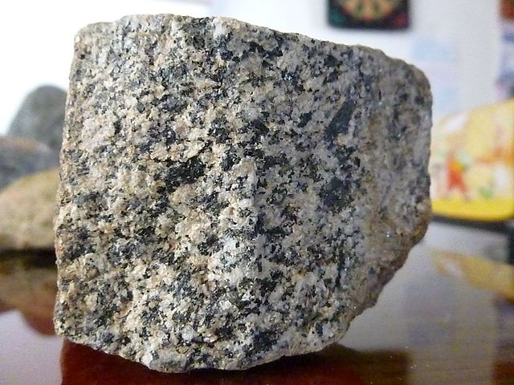
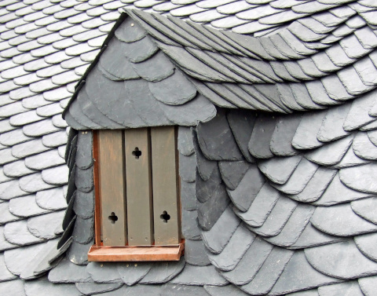
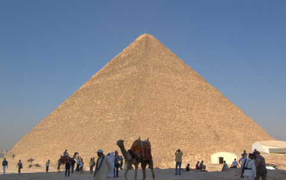
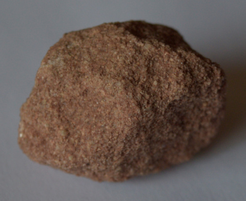
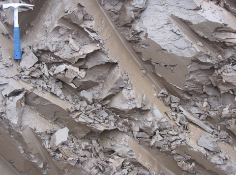
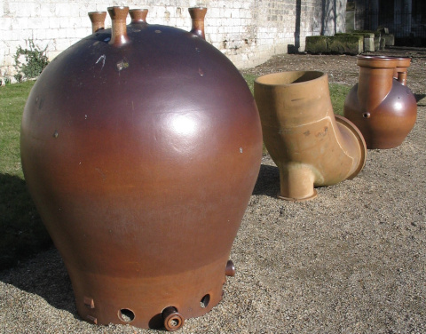

The stone materials¶
They are the materials that come from stones or sand in nature.
Index of contents:
Properties of stone¶
- Mechanical properties of stone
- They are hard materials, relatively fragile, and with sufficient mechanical resistance to be very practical in the construction of buildings and other similar structures.
- Density
In general, it is greater than that of water and varies from 1.5 kg/liter for sand to 2.8 kg/liter for slate, marble or granite.
Pumice or diatomite are exceptions with a very low density, less than that of water, as they are very porous.
- Response to light
Most stone materials are opaque and have very good resistance to solar radiation.
Some stones, such as glass used in windows, quartz or sapphire used in watch faces, are very transparent.
Other stone materials such as porcelain are translucent.
- Stone manufacturing properties
Natural stones are not malleable or ductile nor do they melt easily. They can be cut and polished to produce sheets and blocks.
Binders such as cement are liquid when mixed with water and can be easily molded before they harden.
Ceramic materials have the consistency of very malleable but not very ductile paste. They can be easily molded before cooking.
Glass can be melted easily and acts as a very malleable and very ductile plastic material while hot. It can form very fine threads that serve as reinforcement to other materials (fiberglass).
- Conductivity of stones
- Stone materials have very little thermal and electrical conductivity and resist high tensions and temperatures well. For this reason, glass and ceramics are used as electrical separators in high voltage lines and as refractory material in furnaces.
- Chemical properties of stones
Stones are very stable and resist well to acids and caustics and to oxidation and solar radiation.
The exception to this are limestone rocks and marble, which are attacked by acids and gradually dissolve with the acid rain generated by pollution.
- Ecological properties of stones
Stone materials tend to be poorly recyclable, except glass, which can be recycled many times without loss of quality.
They are not toxic in nature, although cement manufacturing produces many greenhouse gases. It is estimated that 8% of all CO2 emissions come from its manufacturing.
Asbestos, also called asbestos, is highly carcinogenic, which is why its use and manufacture has been prohibited years ago in Western countries.
Granite produces a radioactive and carcinogenic gas called radon. Inhabited areas that contain a lot of granite in the surrounding area should take this into account in construction and use good ventilation systems.
Natural stones¶
- Marble
It has been used since ancient times to construct buildings or carve sculptures. Today it is still used in construction to cover luxurious-looking floors or walls.
Marble is composed of crystallized limestone so it is not resistant to acids, which break it down.

Lysippos, CC BY-SA 2.0 DE, via Wikimedia Commons.¶
- Granite
It has been used since prehistoric times for construction and is highly appreciated for its great resistance to erosion and corrosion.
It has been widely used as a coating on public buildings and monuments. It is also used on everyday objects such as kitchen countertops.
As acid rain increases, granite is replacing marble in outdoor constructions.
Rojinegro81, CC BY-SA 3.0, via Wikimedia Commons.¶
- Board
It is made up of thin, flat slabs or sheets that make it suitable for making flat panels used to cover roofs and, in the past, for writing with chalk.
Dontworry, CC BY-SA 3.0, via Wikimedia Commons.¶
- Limestone
It has been used since ancient times as a construction element. The cathedral of Burgos is built with limestone.
Burning it in a kiln produces lime, a fundamental component of gray cement.
Acid rain dissolves it.
Great Pyramid of Giza. Completely covered in limestone.¶
Berthold Werner, CC BY-SA 3.0, via Wikimedia Commons.- Sandstone
It is the most common sedimentary rock. It is composed of quartz grains and other particles joined by a natural cement (calcium carbonate or others).
It is used as a construction material and in sharpening stones.
Sarranpa, CC BY-SA 4.0, via Wikimedia Commons.¶
- Gravel and sand
- They are small rocks. They are used together with cement to form concrete.
Stone binders¶
They are technical materials produced industrially. They come in the form of a powder that, mixed with water, produces a paste that can be molded. Shortly after mixing with water, they harden and take on a stone-like consistency.
- And so
It is a white binder.
It has been used since prehistoric times to join and seal construction stones. It is also used for covering and decorating walls and ceilings.
The finer grained plaster is called plaster.
- Cement
It is made up of limestone and clays calcined in an oven to which gypsum is added to improve its properties. It is generally gray in color.
Annual production is estimated to be more than 4 billion tons. Its main use is the production of concrete.
- Concrete
It is made up of cement mixed with sand and gravel.
Reinforced concrete has an internal structure of steel bars to improve its resistance.
It is used to make pillars and floors in buildings, roads, bridges, dams, ports, etc.

Dafran, CC BY-SA 4.0, via Wikimedia Commons.¶
Ceramic stones¶
They are composed of a fine powder mixed with water, with a pasty appearance. Once modeled, it is baked to join the fine particles together by fusion.
- Clay
It is a sedimentary rock formed by very fine grains, smaller than 0.004mm.
It was the first ceramic made by humans and even today it is one of the cheapest and most widely used materials.
It is used to make bricks, tiles, containers and to produce cement.
Siim Sepp, CC BY-SA 3.0, via Wikimedia Commons.¶
- Crockery
It is made with clay mixed with sand. It is a porous material just like clay, so it is usually coated with an external varnish, glaze, which crystallizes during firing, making the piece waterproof.
It is used to make tableware.

Lourdes Cardenal, CC BY-SA 3.0, via Wikimedia Commons.¶
- Stoneware
It is a mixture of clay with materials such as silica that provide greater mechanical and cooking resistance (degreasing).
It is a very hard and waterproof material. It is mainly used in the manufacture of floor tiles.
Stoneware used in the chemical industry.¶
Patrick Charpiat, CC BY-SA 3.0, via Wikimedia Commons.- Porcelain
It is a ceramic material that is generally white, hard, waterproof, translucent, very resistant to corrosion, thermal shock and a poor conductor of electricity.
Made up of kaolin, quartz and feldspar powder, it is the finest and most glass-like ceramic material.
It is used to make tableware, vases, electrical insulators, toilets, sinks, etc.

{kind=link}
Glass¶
It is a material obtained by melting silica sand, limestone and sodium carbonate.
It is used to make tableware, bottles, window coverings, windshields, mirrors, lenses, laboratory supplies, etc.
Other materials (plaster sheets, plastic resins, etc.) can be reinforced with glass fibers so that they acquire greater mechanical resistance.
Questionnaires¶
Multiple choice questionnaires on stone materials.